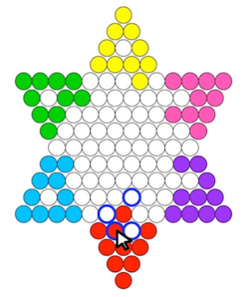

(06)
Chinese Checkers
Coding a multiplayer Chinese checkers game with the option of an opponent AI.
Overview
For my final project in 15-112: Fundamentals of Programming and Computer Science, I developed a Chinese Checkers game using object-oriented programming in Python. The program utilizes Tkinter, a standard GUI library in Python. It features the core gameplay of Chinese checkers along with several additional functionalities. Players have the option to play against an AI opponent or against friends, and they can request for hints during gameplay. It also includes timed turns for an added challenge. You can view a demonstration of my program here.
Complex Features
In Chinese checkers, the game board is not a perfect grid; the even and odd rows are offset from each other. This non-conformity added complexity to tasks such as drawing the board, determining row and column coordinates, and implementing basic gameplay mechanics. To address this, I developed a function that calculates the X-Y coordinates of a cell based on its row and column, and vice versa, by incorporating the necessary offset adjustments. In addition, to account for this offset when moving pieces on the board, my program determines when the change in column must be adjusted.


Another intricate aspect of my code involves the algorithm for enabling a player's piece to continue jumping over other pieces once it has begun. To implement this, I used a variable that switches to True when the player is in the process of jumping, and False otherwise. When the variable is set to True, the user can only execute jumping moves, and their turn does not end until they click elsewhere on the board.
Incorporating animations for the ball movements also posed a challenge. To achieve this, I assigned a variable to each ball indicating whether it is currently in motion. When this variable is set to True, my program calculates the required change in the ball's x-y coordinates over a set amount of time, continuously redrawing the ball until it reaches its new location.
In my code, I implemented the minimax algorithm to enable users to play against an AI opponent. Utilizing object-oriented programming, I constructed a data tree representing all possible game states. Each state is assigned a value reflecting how beneficial it is for the AI. The program then traverses through each branch of the data tree to identify the optimal path. This backtracking algorithm also allows the user to request for hints.
Results
My friends and I regularly use my program to play Chinese checkers. This project provided me with invaluable experience in developing complex code with minimal guidance. Through its completion, I expanded my knowledge of various packages and functionalities available in Python. I also gained confidence in employing recursive functions and object-oriented programming techniques. Lastly, I was able to improve my ability to detect bugs within my code.